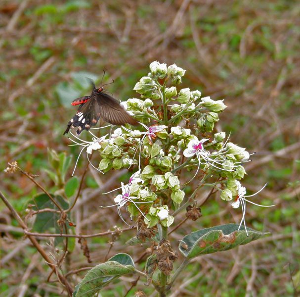

भांटBhant
Clerodendrum infortunatum · Lamiaceae · FLR-0132

- Scientific name
- Clerodendrum infortunatum L.
- Family
- Lamiaceae
- Hindi
- भांट
- Local names
- bhant, bhat, bhaant, ghentu, bhanti
- Status here
- native
- IUCN
- not evaluated
- Review
- audited and independently read
When to look कब देखें
Present all year.
Uses and possibilities उपयोग और संभावनाएँ
“Traditional medicine” means a documented traditional use, not a claim that it works. Nothing on this page is medical advice.
Drawn from the documented uses in the profile below, where each is labelled traditional, current or a research lead. All uses →
भांट / Bhant
Clerodendrum infortunatum L. — Lamiaceae
भांट — बरसात की झाड़ी जिसमें सफेद और लाल फूलों के सुंदर गुच्छे आते हैं। पत्तियाँ बड़ी, नरम, और हलके से सुगंधित। पहाड़ी इलाकों में ज़्यादा, पर पूर्वी उत्तर प्रदेश के नम क्षेत्रों में भी मिलती है। फूलों की सुंदरता के कारण कभी-कभी बाग़ों में भी लगाई जाती है।
Quick Identification त्वरित पहचान
| Feature | Description |
|---|---|
| Size | Soft-wooded shrub 1–2 m tall, often sprawling |
| Leaves | Opposite, large, ovate, 10–25 cm, softly hairy, with a minty smell |
| Flowers | White with a red or pink calyx, fragrant, in terminal spikes |
| Fruit | Small drupe, enclosed in a colourful persistent calyx (white, pink, or red) |
| Stem | Angular, slightly hairy, herbaceous |
| The test | Crush a leaf; it has a minty, slightly acrid smell |
Field tip: A soft, spreading shrub with large, velvety leaves and terminal spikes of white flowers with red calyces. The coloured calyces on the fruit are distinctive and persistent.
हिंदी — कैसे पहचानें: बड़ी, नरम पत्तियाँ, सफेद फूल, लाल-गुलाबी बाह्यदल। पत्ती को रगड़ने से पुदीने जैसी गंध आती है।
Morphology आकारिकी
Biometrics (wild and cultivated plants, Himalayan and northeastern India):
| Measurement | Range |
|---|---|
| Height | 1–2 m |
| Stem diameter | 0.8–2 cm |
| Leaf length | 10–25 cm |
| Leaf width | 7–15 cm |
| Flower spike length | 15–30 cm |
| Fruit diameter | 0.6–0.8 cm |
Stem and branches: Soft, herbaceous when young, becoming woody at the base only in older plants. The stems are angular and slightly hairy.
Leaves: Opposite, decussate, large, ovate, with a cordate base and an acuminate apex. The leaf margin is crenate-serrate. The upper surface is slightly hairy and glossy; the lower surface is paler and more densely hairy. Petioles are long, 5–10 cm.
Flowers: The corolla is white and five-petaled. The calyx is tubular, 2–3 cm, and is white, pink, or deep red, persisting around the fruit. The flowers are fragrant and arranged in dense terminal spikes.
Fruit: A small, globular drupe, 0.6–0.8 cm in diameter, enclosed in the persistent, colorful calyx. The fruit is one-seeded.
हिंदी: पत्ती बड़ी, नरम, दिल के आकार का। फूल सफेद, लाल-गुलाबी बाह्यदल। फल छोटा, रंगीन कोष में।
Behaviour & Ecology व्यवहार और पारिस्थितिकी
Bhant is a shrub of the moist deciduous forests and forest margins, particularly abundant in the Himalayan foothills and the northeast Indian hills. It is a pioneer species, colonizing disturbed areas and field edges after the monsoon. The large, soft leaves are palatable to insects and herbivores. The flowers are fragrant and are visited by bees, butterflies, and long-tongued insects seeking nectar. The persistent, colourful calyces attract birds, which feed on the fruits and disperse the seeds.
The shrub is easily propagated from cuttings and is sometimes grown in gardens for ornament.
हिंदी: पहाड़ी इलाकों में आम। बरसात के बाद नई जमीन पर उग जाती है। फूल की गंध तेज़ है। फल पक्षी खाते हैं।
Life Cycle / Phenology जीवन चक्र
| Month / season | Event |
|---|---|
| June–July | New leaf flush after early monsoon rains |
| July–November | Flowering continues through the monsoon and into autumn |
| September–December | Fruit ripening; calyces colour up |
| December–May | Relative dormancy; some leaf loss in dry season |
Seeds germinate readily after rains. Young plants may flower in the first monsoon. Lifespan 15–25 years.
हिंदी: जुलाई-नवंबर में फूल। फल सितंबर-दिसंबर में पकता है। बीज बरसात में अंकुरित होते हैं।
Associated Species / Interactions संबंधित प्रजातियाँ
- Pollinators: Bees, butterflies, and moths visit the fragrant flowers.
- Fruit dispersal: Birds feed on the ripe fruit and disperse seeds.
- Plant companions: often found with Lantana, ginger, and other monsoon plants in disturbed areas.
Pests and Diseases कीट और रोग
- Leaf spots in humid seasons; occasionally serious in wet areas.
- Leaf beetles feed on foliage; rarely cause significant damage.
Agricultural / Human Relevance कृषि प्रासंगिकता
Traditional uses:
- Medicinal use. The plant is recorded in folk medicine of the Himalayan regions for treating fever, asthma, and skin complaints. Kirtikar & Basu list it in their medicinal plant materia medica.
- Ornamental. The plant is sometimes cultivated in gardens for its attractive flowers and colourful fruit calyces.
Today. Bhant remains a minor plant in herbal trade, more common in north-eastern and Himalayan regions. It is occasionally grown as an ornamental in botanical gardens.
Research direction (a lead, not a result). Phytochemical studies on the plant's properties are limited. Whether traditional uses are supported by modern evidence is an open question.
हिंदी: बुखार, अस्थमा में परंपरागत दवाई। बाग़ों में शोभा के लिए लगाई जाती है। बड़े, रंगीन कोष सुंदर लगते हैं।
Expected Locally स्थानीय रूप से अपेक्षित
Not a field record. Written from published accounts for eastern Uttar Pradesh. No confirmed local sighting yet — if you have seen it, that is what the atlas needs.
अभी तक स्थानीय पुष्टि नहीं। यह विवरण प्रकाशित स्रोतों से है, किसी अवलोकन से नहीं।
Bhant is more typical of the Himalayan foothills and the northeast. In the eastern plains of Uttar Pradesh, it would be occasional to rare, most likely in moist field margins and disturbed monsoon areas.
Distribution वितरण
Global range: Native to the Indian subcontinent and Southeast Asia, from the Himalayas to the Western Ghats and into Myanmar and Thailand.
In India: Widespread in the foothills and hills; less common in the plains.
In Uttar Pradesh: Scattered in the Himalayan foothills; rare in the plains.
In Basti district / eastern UP: Occasional in moist monsoon areas; less common than in the hills.
Research Questions शोध प्रश्न
Anyone can investigate these | कोई भी इन प्रश्नों की जाँच कर सकता है
- Which insects visit the flowers, and how long do they stay on each flower? — Observe flowers for 30 minutes at different times of day.
- Does the colour of the calyx change as the fruit matures, and when do birds eat it? — Mark fruits; observe colour changes and bird visits weekly.
- How many seeds germinate if collected fruits are dried for a week versus used fresh? — Collect and sow seeds; compare germination rates.
- Does the leaf smell change if the plant is stressed (e.g., by drought)? — Monitor leaves through different conditions; smell and record observations.
- Can a cutting rooted indoors in winter produce flowers in its first monsoon? / क्या सर्दी में घर के अंदर लगाई गई कलम पहली बरसात में फूल दे सकती है? — Root cuttings; pot them; observe flowering.
Similar Species मिलती-जुलती प्रजातियाँ
| Species | How to tell apart | हिंदी |
|---|---|---|
| Lantana (Lantana camara) | Flowers are multicoloured and clustered tightly; leaves are rougher, smaller; invasive | लंटाना — रंग-बिरंगे फूल, छोटी पत्तियाँ |
| bleeding-heart (Clerodendrum speciosissimum) | Flowers are deep red and more tubular; larger shrub | दूसरी क्लेरोडेंड्रम — लाल फूल, बड़ी झाड़ी |
| Water horehound (Lycopus europaeus) | Much smaller; leaves narrower; flowers are tiny and pale; non-fragrant | छोटा पौधा, छोटे फूल |
Field rule: A soft, spreading shrub with large, velvety leaves and white flowers in long spikes with colourful red or pink persistent calyces is bhant.
Taxonomy & Classification वर्गीकरण
Original description. Described by Linnaeus in 1753 in Species Plantarum, Vol. 2, p. 635. The epithet infortunatum (unfortunate) refers to the plant's tendency to spread and become weedy.
Subspecies. Monotypic — no subspecies currently recognised.
Family and order placement. Lamiaceae, the mint family, in the order Lamiales. The genus Clerodendrum holds about 150 species, mostly tropical African and Asian.
Phylogenetic notes. Clerodendrum infortunatum is one of the Asian species; African species are used differently in traditional medicine.
IUCN status rationale. Not evaluated. Widespread in its native range.
Photo Gallery फोटो गैलरी
Photos needed आवश्यक फोटो
- [ ] Whole shrub in flower (पूरी झाड़ी)
- [ ] Close view of flower spike showing white flowers and red calyces (फूलों का विस्तार)
- [ ] Mature fruit with colourful persistent calyx (फल)
- [ ] Leaf detail showing texture and size (पत्तियाँ)
No photos yet — add field photos to media/species/bhant/ and run node scripts/sync_photos.js.
References संदर्भ
- Linnaeus, C. (1753). Species Plantarum, Vol. 2, p. 635. Laurentii Salvii, Holmiae. [original description]
- Hooker, J.D. (1885). The Flora of British India, Vol. 4. L. Reeve, London.
- Kirtikar, K.R. & Basu, B.D. (1935). Indian Medicinal Plants, 2nd ed., vol. 2. Lalit Mohan Basu, Allahabad.
- Duthie, J.F. (1903). Flora of the Upper Gangetic Plain and of the Adjacent Siwalik and Sub-Himalayan Tracts. Government Printing, Calcutta.
- Negi, J.S., Bisht, V.K., Bhat, S.V., Mamgain, H. & Rawat, M.S.M. (2011). Phytochemistry and pharmacology of Clerodendrum infortunatum L. Journal of Medicinal Plants Research 5(16): 3918–3923.
- GBIF Occurrence Data — Clerodendrum infortunatum, India (2026).
Source file: species/flora/shrubs/bhant.md